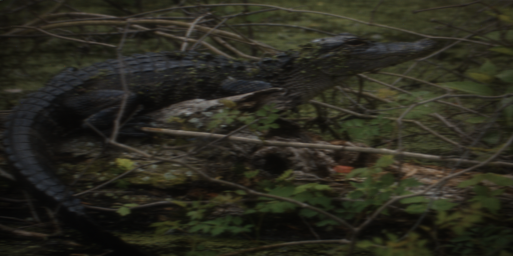
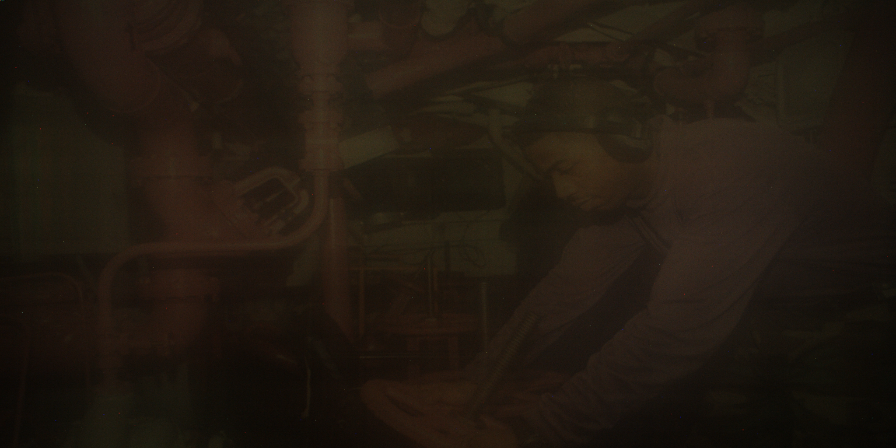
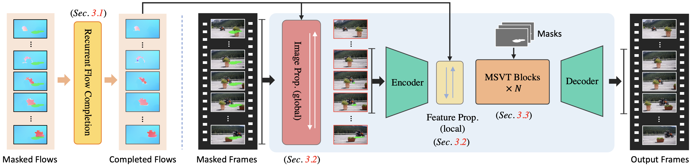

Under-display cameras (UDCs) allow for full-screen designs by positioning the imaging sensor underneath the display. Nonetheless, light diffraction and scattering through the various display layers result in spatially varying and complex degradations, which significantly reduce high-frequency details. Current PSF-based physical modeling techniques and frequency-separation networks are effective at reconstructing low-frequency structures and maintaining overall color consistency. However, they still face challenges in recovering fine details when dealing with complex, spatially varying degradation. To solve this problem, we propose a lightweight Uncertainty-aware Context-Memory Network (UCMNet), for UDC image restoration. Unlike previous methods that apply uniform restoration, UCMNet performs uncertainty-aware adaptive processing to restore high-frequency details in regions with varying degradations. The estimated uncertainty maps, learned through an uncertainty-driven loss, quantify spatial uncertainty induced by diffraction and scattering, and guide the Memory Bank to retrieve region-adaptive context from the Context Bank. This process enables effective modeling of the non-uniform degradation characteristics inherent to UDC imaging. Leveraging this uncertainty as a prior, UCMNet achieves state-of-the-art performance on multiple benchmarks with 30\% fewer parameters than previous models.
ProPainter comprises three key components: recurrent flow completion, dual-domain propagation, and mask-guided sparse Transformer. First, we employ a highly efficient recurrent flow completion network to complete the corrupted flow fields. We then perform propagation in both image and feature domains, which are jointly trained. This approach enables us to explore correspondences from both global and local temporal frames, resulting in more reliable and effective propagation. The subsequent mask-guided sparse Transformer blocks refine the propagated features using spatiotemporal attention, aided by a sparse strategy that considers only a subset of the tokens. This enhances efficiency and reduces memory consumption, while maintaining performance.

@InProceedings{kim2025UCMNet,
title = {{UCMNet}: Uncertainty-Aware Context Memory Network for Under-Display Camera Image Restoration},
author = {Kim, Daehyun and Kim, Youngmin and Oh, Yoon Ju and Kim, Tae Hyun},
booktitle = {Computer Vision and Pattern Recognition (CVPR)},
year = {2026}
}